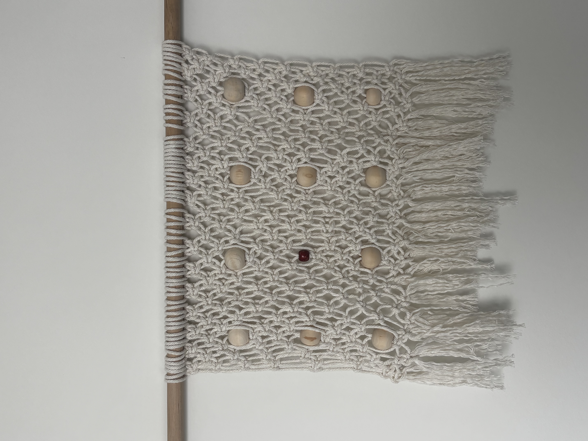

Data Physicalization: translating campus safety data into a tactile textile interface
A hand-knotted macramé panel that encodes real incident patterns from GTPD's published safety reporting — proving that data can be read by touch, not just sight.

Bridging digital UX and physical material engineering
This project converts abstract campus safety data into a physical, touchable object — proof that UX principles like hierarchy and affordance transfer directly into material systems.
Using macramé, a knot-based fiber structure, I built a woven panel that encodes incident data through knot density, bead placement, and material contrast. The result is a tactile interface: something you read with your hands, not just your eyes. It's a bridge between the two disciplines I want to combine — digital experience design and bespoke physical craftsmanship.
Flat maps are functional. They aren't felt.
A digital crime map compresses risk into color gradients and dots. It's efficient, but disposable — glanced at, scrolled past, abstracted from the body that actually has to walk through that space. It asks for visual attention and rarely asks for physical engagement.
The UX insight driving this project: intuition is multisensory. People build spatial understanding through touch, proximity, and repetition, not just sight. A woven object you run your hands across creates a slower, more embodied relationship to information than a map you scroll past.
So instead of asking how to visualize the data, I asked how to let someone feel it — encoding severity and frequency directly into knot type, bead scale, and color contrast, so reading the data becomes a physical, almost narrative experience.
Materials and structure
- Base structure — cotton cord, hand-tied with spiral knots, square knots, and mesh patterning
- Mounting — natural wood dowel, suspended cord wrap
- Data markers — wooden beads for high-frequency events, one dyed red bead as a high-severity anchor
- Method — knot studies developed by hand first, then translated into a digital grid to control spacing, alignment, and repeatability, preserving tactile character while gaining computational precision over placement
What the knots represent structurally
The woven mesh functions as a coordinate system. Each knot intersection is a nodal point a bead can be seated into, turning the textile into a grid onto which categorical data can be pinned. The continuous woven field ties every data point into one connected system, rather than isolated markers on a blank background — mirroring how incidents on a real campus exist within a connected geography, not in isolation.
The data coding system
| Element | Count | Represents |
|---|---|---|
| Standard wood beads | 11 | High-frequency property crime (bicycle theft) |
| Red accent bead | 1 | High-severity incident anchor (assault-category incidents) |
Coding is informed by patterns in GTPD's published Clery Act Annual Security & Safety Reports and campus crime log — the same categories (larceny/bicycle theft, assault) those reports disclose.
The logic is intentional, not decorative. Frequency maps to repetition: common incidents get a repeated, evenly distributed bead, so density communicates volume by touch the way a bar chart would by sight. Severity maps to contrast: the single red bead breaks the pattern, findable without looking — the same hierarchy a UX designer builds with a single accent color, expressed here in material instead of pixels.
Where this methodology could go next: bespoke automotive interiors
This project is a proof of concept. The next step I want to explore is bringing this data-to-textile methodology into bespoke automotive interiors — a space where materials already carry meaning, and houses like Ferrari Tailor Made and Rolls-Royce Bespoke have proven that clients want objects, not just products.
These are conceptual directions for future design studies, not manufactured or client-commissioned work.
Narrative textiles
Cultural and material history — Mongolian horsehair weaving traditions, for example — woven directly into performance seat trim. Knot density and placement could reflect provenance, craft lineage, or an owner's history, encoded structurally rather than printed on.
Acoustic data visualization
A V12's soundwave frequency is, structurally, just another dataset — amplitude, harmonic layering, frequency spikes across an RPM range. The same coding logic used for the safety map could translate that signature into 3D-printed texture or embroidery across cabin door cards, so the sound of the car becomes something felt in the surface of the interior.
What this proves
Translating abstract data into physical, sensorial systems — not just charts, but touchable objects with real informational hierarchy.
Working across craft and computation — hand-built knot studies refined through a digital grid, balancing tactile authenticity with precision.
Understanding material as an interface — knot type, bead scale, and color function as UI elements in a physical medium.
Designing coding systems that scale — this bead/knot grammar could be re-applied to new datasets and new contexts, automotive trim included.